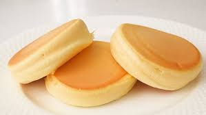

Fluffy Pancake Recipe
Fluffy Pancake Recipe Link

Description
This will be your guide on how to bake a fluffy pancake.
Ingredients
- 30g / 3.3 tablespoon - all-purpose flour
- 25g / 2 tablespoon - sugar
- 20mL / 4 teaspoon - milk
- 1.25mL / 1/4 teaspoon - vanilla extract
- 2 pieces - egg
Steps
- Separate the egg yolks and egg whites from the 2 pieces of egg
- Pour 20mL / 4 teaspoon of milk on the egg yolks and mix well
- Add 30g / 3.3 tablespoon of all-purpose flour and continue mixing the ingredients
- Drop 1.25mL / 1/4 teaspoon of vanilla extract on the batter
- Whip the egg whites using an electric whisk, add the 25g / 2 tablespoon of sugar at 3 intervals
- Pour 1/3 of the meringue to the batter and mix well
- Transfer all of the mixed batter on to the remaining 2/3 of the meringue and mix them thoroughly
- Put an even portion of a batter into the pan and cook for 5 minutes in low heat
home